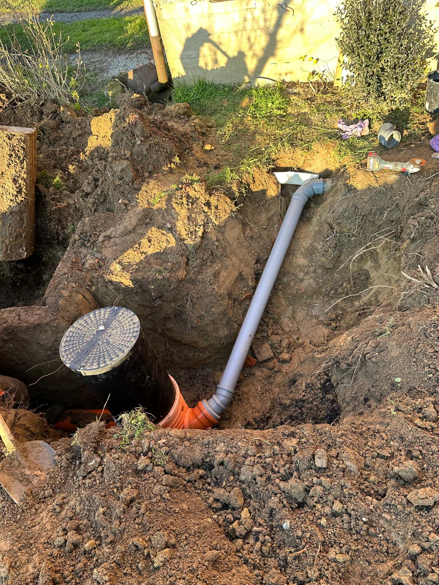
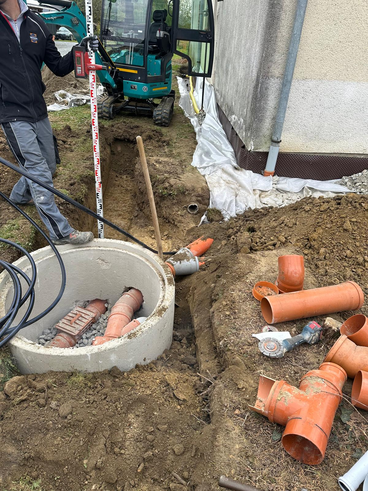
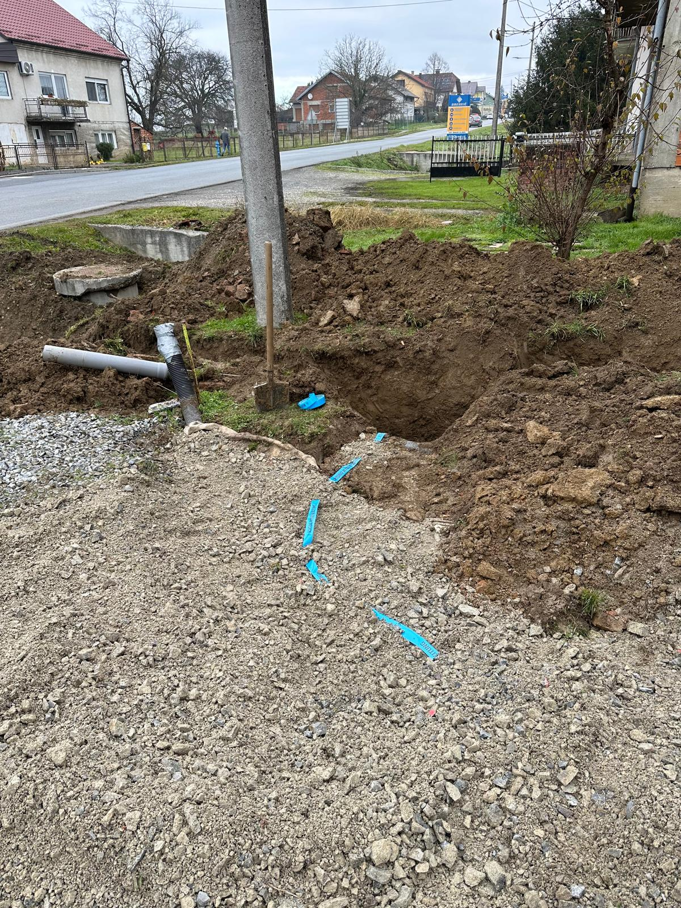
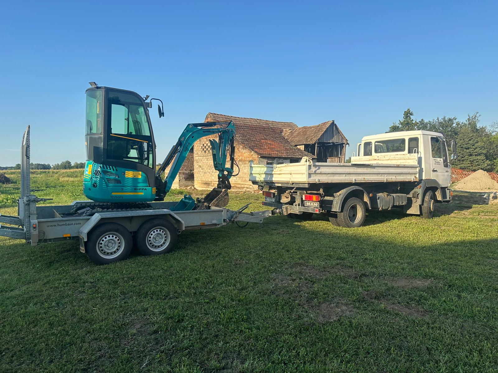

KK Tehnik izvodi kompletnu izradu drenaže oko obiteljskih kuća, poslovnih objekata, garaža i temelja. Kvalitetno izveden sustav drenaže sprječava zadržavanje podzemnih i oborinskih voda, smanjuje vlagu u zidovima te produžuje vijek trajanja objekta.
Radove izvodimo strojno uz precizno iskopavanje kanala, postavljanje drenažnih cijevi, geotekstila i odgovarajućeg drenažnog materijala kako bi sustav dugoročno funkcionirao bez začepljenja i problema.



